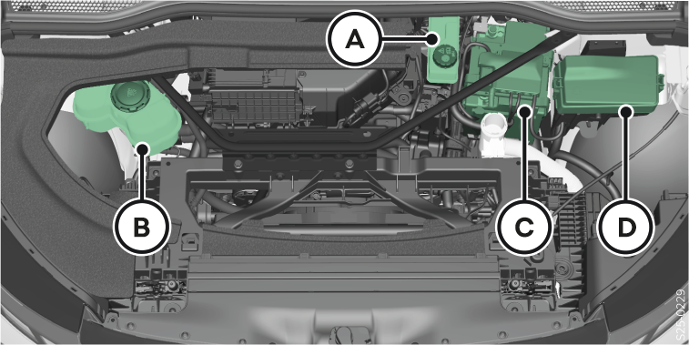

réservoir du lave-glace Essuie-glace et lave-glace
Pour accéder à d’autres composants, déposer le rangement et le cache Composants sous le capot avant.

Illustration – L’emplacement et l’aspect de chaque composant peuvent varier.
Réservoir de liquide de frein Freinage
Vases d'expansion du liquide de refroidissement Liquide de refroidissement
Batterie de véhicule 12 volts Batterie de véhicule 12 volts
Boîte à fusibles Fusibles dans l'espace sous le capot avant